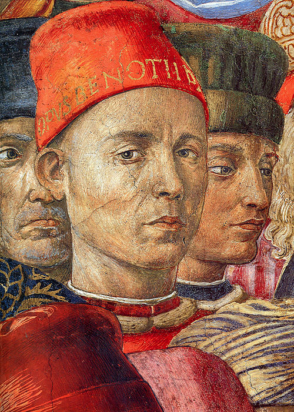
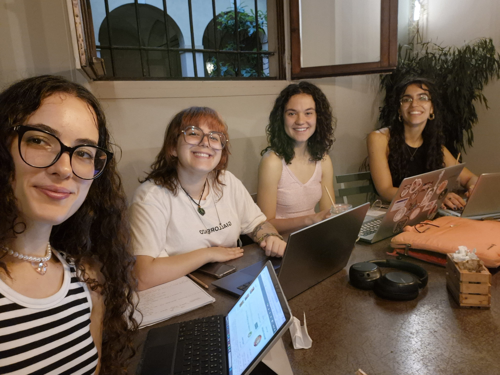

My Profile
Benozzo Gozzoli

Painter, Artist
Scandicci, IT
Florence 1420/1421 - Pistoia 4 October 1497
My family came from Sant'Ilario a Colombaia, a village on the outskirts of Florence. I was born Benozzo di Lese, probably in 1420 or 1421. I trained with Fra Angelico as a painter after working as an apprentice goldsmith. I was one of the most prolific and popular fresco painters of the 15th century. While visiting my son and carrying out various commissions, I died in Pistoia in 1497, probably from the plague.


New post
Status: Feeling creative
 1 min
Knowledge Engineering Research Group
Bologna, Italy
Topic choice
When selecting the topic, we were interested in researching minor artists who had little to no information on the analyzed knowledge graphs, namely ArCo and DBpedia. In particular, we focused on the Renaissance artist Benozzo Gozzoli and his works. Benozzo Gozzoli, also known as Benozzo di Lese di Sandro Gozzoli, is an italian artist. He painted several artworks, however most of them are not well known nor well documented. At first, the goal was to compare ArCo and DBpedia knowledge graphs, to see which artworks by Benozzo Gozzoli are available on ArCo but not on DBpedia, in order to enrich DBpedia with the triples of the missing artworks. During the research we also noticed that some biographical information was poor or completely missing on the DBpedia page of Benozzo Gozzoli, for this reason we also decided to enrich also this part with RDF triples.
Self-portrait of Benozzo Gozzoli
16 min
Knowledge Engineering Research Group
Bologna, Italy
Methodology
At first, the goal was to compare ArCo and DBpedia knowledge graphs, to see which artworks by Benozzo Gozzoli are available on ArCo but not on DBpedia, in order to enrich DBpedia with the triples of the missing artworks. During the research we also noticed that some biographical information was poor or completely missing on the DBpedia page of Benozzo Gozzoli, for this reason we decided to also enrich this part with RDF triples. After finding a SPARQL query that could search for Benozzo Gozzoli’s artworks on ArCo, which we need to enrich DBpedia, we started looking for gaps of information related to Benozzo Gozzoli on DBpedia. All this was done also with the help of LLMs, in particular ChatGPT and Gemini. We proceeded by trying to fill these gaps, again with the aid of LLM, using SPARQL queries to search for resources and creating new RDF triples that can potentially add new artworks and information on Benozzo Gozzoli’s DBpedia page. Finally, we compared the answers given by ChatGPT and Gemini and drew a conclusion about the different ways in which these two LLMs reason.
16 min
Knowledge Engineering Research Group
Bologna, Italy
The team
Friend List
Fra Angelico Giusto D'Andrea Zanobi di Jacopo Machiavelli